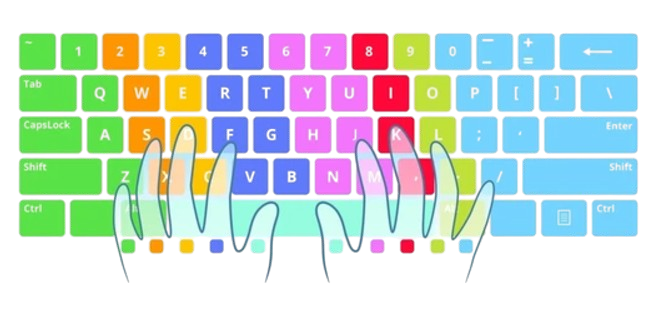

-
- Guidance
- Practice Regularly: Set aside time daily to practice typing, even if it's just 10 minutes.
- Use All Your Fingers: Try to type using all ten fingers, ensuring even distribution of workload.
- Correct Posture: Sit upright with feet flat on the floor and wrists slightly elevated.
- Focus on Accuracy: Prioritize typing accuracy over speed, as speed will come with time.
- Break Habits: Avoid looking at the keyboard; trust muscle memory.
-
- Drills
- Home Row Drills: Practice typing the home row keys (A, S, D, F, G, H, J, K, L).
- Common Words: Type common English words repeatedly to build muscle memory.
- Typing Tests: Regularly take typing tests to track your progress.
- Text Repetition: Type the same paragraph multiple times to increase familiarity.
- Special Characters: Practice using punctuation marks, symbols, and numbers.
-
- Links
- Youtube Tips - A Youtube video to help guide your mindset.
- Typing.com - Free typing lessons and games.
- 10FastFingers - Typing speed tests and competitions.
- Keybr - Interactive typing exercises to improve skill.
- Monkeytype - A customizable typing practice platform with analytics.